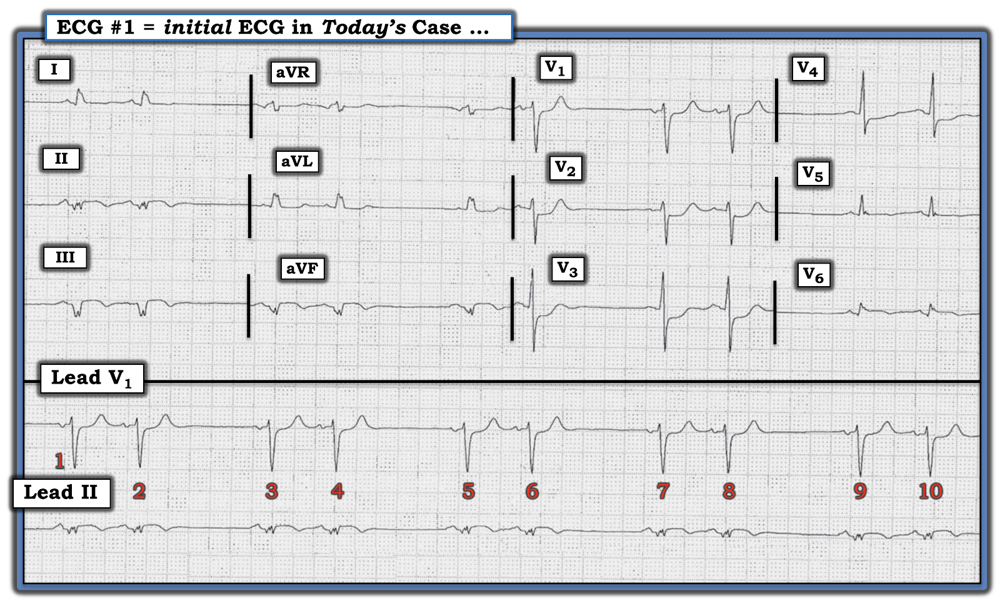
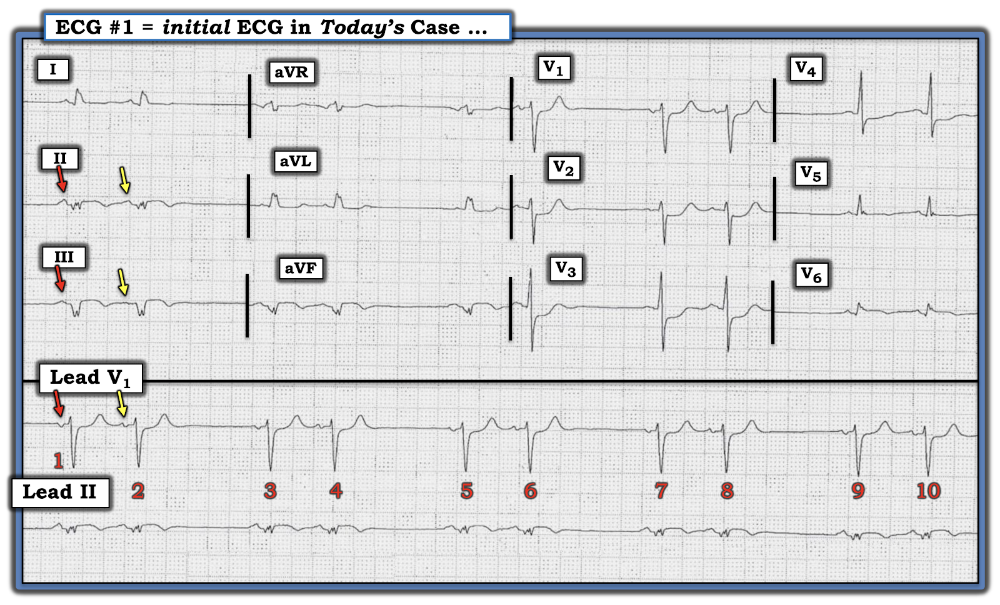
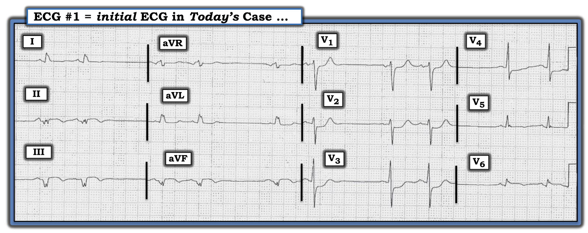

ECG Blog #339 — Có phải blốc SA không?
Điện tâm đồ ở Hình-1 — được ghi từ một người đàn ông lớn tuổi đến ED (Khoa Cấp cứu – Emergency Department) vì đau ngực.
- Các nhân viên y tế lo ngại có blốc SA. Bạn có đồng ý không?
- Bạn còn thấy gì nữa?


Cách tiếp cận CỦA TÔI với điện tâm đồ ở Hình-1:
Như thường lệ – tôi thích bắt đầu việc đọc bằng cách đánh giá dải nhịp chuyển đạo dài — dùng Cách tiếp cận Ps, Qs & 3R để nhớ lại 5 Thông số CHÍNH (Xem ECG Blog 185). Tôi thấy dễ nhất (và hiệu quả nhất) là hoãn việc đánh giá điện tâm đồ 12 chuyển đạo cho tới sau khi đã có dịp xem xét nhịp.
- Nhịp ở Hình-1 không đều — nhưng nó có biểu hiện một kiểu "nhịp đôi" (bigeminal) của nhịp theo nhóm (group beating) (tức là các nhóm 2 nhát lặp đi lặp lại — thấy ở đây dưới dạng một kiểu lặp lại của các khoảng R-R "dài-rồi-ngắn" xen kẽ nhau).
- QRS hẹp (tức là thời gian không quá nửa ô lớn ở bất kỳ chuyển đạo nào = không quá 0.10 giây). Vì vậy — nhịp này là trên thất.
- Sóng P có hiện diện. Dễ nhất là tập trung vào 2 dải nhịp chuyển đạo dài — trong đó chi tiết của phức bộ QRS và sóng P có lẽ dễ thấy nhất ở chuyển đạo V1 dài.
Tầm quan trọng của sóng P:
NẾU tập trung vào dải nhịp chuyển đạo V1 dài ở Hình-1 — có vẻ như có một sóng P đi trước mỗi phức bộ QRS trên bản ghi này.
- Khoảng PR bình thường (tức là trong khoảng 0.12-0.21 giây ở chuyển đạo II) — và có vẻ có thời gian bằng nhau ở cả 10 nhát trên bản ghi này.
- Nhát thứ 1 trong mỗi cặp (tức là các nhát #1,3,5,7 và 9) — có vẻ là dẫn truyền từ xoang (tức là sóng P dương với khoảng PR hằng định và bình thường).
ĐIỂM THEN CHỐT (PEARL) #1: Như đã bàn trong ECG Blog #232 và Blog #312 — khi nhận ra một kiểu nhịp đôi trên thất mà nhát thứ 1 trong mỗi cặp được dẫn truyền, cần nghĩ tới các chẩn đoán phân biệt sau đây:
- Nhịp xoang với nhịp đôi nhĩ hoặc nhịp đôi bộ nối (tức là cứ cách một nhát là một PAC hoặc một PJC).
- Nhịp xoang với nhịp ba nhĩ — trong đó cứ mỗi sóng P thứ ba là một PAC "bị blốc" (không dẫn truyền).
- Một dạng nào đó của blốc SA ( = Xoang-Nhĩ).
- Blốc AV độ 2 Mobitz I ( = Wenckebach AV) với dẫn truyền AV 3:2.
- Blốc AV độ 2 Mobitz II (với cứ mỗi sóng P thứ 3 không được dẫn truyền).
==========================
Vượt ra ngoài phần cốt lõi: Về mặt kỹ thuật, còn một vài nguyên nhân khác của nhịp đôi không cần xét tới trong ca hôm nay, vì nhịp hoặc không hoàn toàn là nhịp trên thất — hoặc — vì nhát thứ 1 trong mỗi nhóm không dẫn truyền từ xoang. Các nguyên nhân khác này gồm:
- Nhịp đôi thất (tức là cứ cách một nhát là một PVC).
- Rung nhĩ, nhịp nhanh nhĩ hoặc cuồng nhĩ với dẫn truyền kiểu Wenckebach.
- Nhịp đôi thoát–bắt được ("Escape-Capture") (nhát thứ 1 trong mỗi nhóm là một nhát thoát bộ nối hoặc nhát thoát thất — theo sau là một nhát được dẫn truyền).
==========================
ĐIỂM THEN CHỐT (PEARL) #2: Vì hoạt động nhĩ cung cấp manh mối thiết yếu cho nguyên nhân của một nhịp đôi — Câu hỏi MẤU CHỐT — là liệu hình thái của tất cả các sóng P trên bản ghi hôm nay có giống nhau không?
- NẾU hình thái sóng P (và khoảng PR) đều giống nhau ở từng nhát trong 10 nhát trên bản ghi hôm nay — thì tất cả các sóng P đều dẫn truyền từ xoang.
- NGƯỢC LẠI, NẾU — hình thái sóng P của mỗi nhát sớm (tức là các nhát #2,4,6,8 và 10) khác đi — thì các nhát sớm này phải là PAC (ngoại tâm thu nhĩ – Premature Atrial Contractions), và nhịp là nhịp đôi nhĩ.
- Điểm MẤU CHỐT: Một sóng P lạc chỗ xuất phát từ một vị trí trong nhĩ nằm gần nút SA — có thể trông rất giống sóng P xoang ở một hoặc nhiều chuyển đạo. Nhưng sóng P không phải xoang sẽ không trông giống sóng P xoang ở cả 12 chuyển đạo. Vì lý do này — điều quan trọng là phải khảo sát kỹ hình thái sóng P ở càng nhiều chuyển đạo trong 12 chuyển đạo càng tốt.
Hãy NHÌN LẠI bản ghi hôm nay (Xem Hình-2):
- GỢI Ý: Hãy so sánh hình thái sóng P ở Hình-2 tại 3 chuyển đạo có mũi tên màu. Hình thái của các sóng P có mũi tên ĐỎ và mũi tên VÀNG có giống hệt nhau ở mỗi chuyển đạo trong 3 chuyển đạo ghi đồng thời mà tôi đã đánh dấu không?


TRẢ LỜI:
Có những khác biệt tinh tế-nhưng-có-thật về hình thái sóng P giữa các sóng P có mũi tên ĐỎ và mũi tên VÀNG ở Hình-2:
- Ở chuyển đạo II — sóng P có mũi tên ĐỎ rõ ràng lớn hơn sóng P có mũi tên VÀNG. Ủng hộ rằng dấu hiệu này là có thật (chứ không phải do nhiễu hay do biến thiên bình thường có thể thấy từ sóng P này sang sóng P kế tiếp) — là việc sóng P đầu tiên trong mỗi nhóm trong 5 nhóm ở dải nhịp chuyển đạo II dài đều lớn hơn.
- Ở chuyển đạo III — sóng P có mũi tên VÀNG hầu như không thấy, trong khi có thể thấy một sóng P rõ ràng dưới mũi tên ĐỎ.
- Ở chuyển đạo V1 — thành phần âm của sóng P có mũi tên ĐỎ lớn hơn. Một lần nữa, ta thấy thành phần âm của sóng P thứ 1 trong mỗi nhóm trong 5 nhóm ở chuyển đạo V1 dài đều lớn hơn.
- ĐIỂM THEN CHỐT (PEARL) #3: Theo kinh nghiệm của tôi — blốc SA rất hiếm! Ngược lại — nhịp đôi nhĩ là một rối loạn nhịp thường gặp. Vì vậy, tôi xuất phát từ tiền đề rằng trước khi chẩn đoán blốc SA là nguyên nhân của một nhịp đôi — tôi biết rằng mình có lẽ sẽ thấy được những khác biệt tinh tế-nhưng-có-thật về hình thái sóng P giữa 2 nhát trong mỗi nhóm NẾU tôi xem đủ nhiều chuyển đạo khác nhau. Chỉ khi thật sự không có khác biệt nào về hình thái sóng P ở nhiều chuyển đạo thì tôi mới cân nhắc blốc SA.
NHẬN ĐỊNH: Có những khác biệt tinh tế-nhưng-có-thật về hình thái sóng P giữa 2 sóng P trong mỗi nhóm ở Hình-2. Vì vậy — ta có thể loại trừ blốc AV (cả Mobitz I lẫn Mobitz II) — vì với cả hai dạng blốc AV, sóng P phải vừa đều vừa có cùng hình thái.
- Ta đã loại trừ blốc SA — vì với rối loạn nhịp hiếm gặp này, hình thái của tất cả các sóng P phải giống nhau.
- Ta có thể loại trừ PAC bị blốc — vì sóng T của nhát thứ 2 trong mỗi nhóm (tức là sóng T của các nhát #2,4,6,8,10) trông giống hệt sóng T của nhát thứ 1 trong mỗi nhóm (tức là không có dấu hiệu nào của một PAC bị blốc "ẩn").
- Vì vậy — nhịp ở Hình-2 là nhịp đôi nhĩ!
================================
Còn phần còn lại của điện tâm đồ 12 chuyển đạo thì sao?
Quay lại điện tâm đồ 12 chuyển đạo ở Hình-2 — đây là một bản ghi rất bất thường của người đàn ông lớn tuổi đến ED vì đau ngực!
- Hãy NHÌN LẠI bản ghi 12 chuyển đạo (Hình-3):


— CÂU HỎI: Bạn còn thấy gì nữa? —
SUY NGHĨ CỦA TÔI về điện tâm đồ 12 chuyển đạo:
Như đã nêu — nhịp nền ở Hình-3 là nhịp đôi nhĩ. Các dấu hiệu khác gồm:
- Có điện thế thấp (low voltage) ở các chuyển đạo chi (tức là Không có chuyển đạo chi nào >5 mm). Điện thế cũng thấp một cách đáng ngạc nhiên ở các chuyển đạo trước tim bên V5,V6 (vốn thường có biên độ sóng R đáng kể).
- Các khoảng (PR, QRS, QTc) bình thường. Dù vậy, mặc dù phức bộ QRS đo được không “rộng” (tức là Thời gian không quá 0.10 giây) — QRS ở các chuyển đạo chi “trông rộng”, vì có phân mảnh (fragmentation – khía, notching) phức bộ QRS ở cả 6 chuyển đạo chi.
- Có LAD (trục lệch trái – Left Axis Deviation) rõ rệt — do các phức bộ QS phân mảnh hoàn toàn âm ở mỗi chuyển đạo dưới. Điều này là do LAHB (blốc phân nhánh trái trước – Left Anterior HemiBlock) — nhồi máu thành dưới không rõ tuổi — và/hoặc một sự phối hợp nào đó của cả hai thì chưa chắc chắn.
- Không có lớn buồng tim.
Về Thay đổi Q-R-S-T:
- Sóng Q: Như đã nêu — Có các phức bộ QS phân mảnh ở các chuyển đạo dưới. Cũng thấy sóng Q ở chuyển đạo V6. Tuy kích thước nhỏ — nhưng xét tới biên độ sóng R ở chuyển đạo V6 bé đến mức nào — thì đây là một sóng Q có ý nghĩa (tức là liên quan tới nhồi máu).
- Tăng tiến sóng R: Vùng chuyển tiếp (nơi sóng R trở nên cao hơn độ sâu của sóng S) — xảy ra đúng chỗ (ở đây giữa các chuyển đạo V2-đến-V4). Dù vậy — biên độ sóng R rất nhỏ ở các chuyển đạo trước tim bên V5,V6 rõ ràng là bất thường.
- Thay đổi ST-sóng T: Có đoạn ST dạng vòm (coving) và chênh lên, kèm sóng T đảo ngược phần cuối ở mỗi chuyển đạo dưới. Thấy đoạn ST chênh xuống soi gương kín đáo ở chuyển đạo aVL. Sóng ST-T dẹt không đặc hiệu ở chuyển đạo bên cao còn lại ( = chuyển đạo I) — có lẽ cũng phản ánh thay đổi soi gương.
- Ở các Chuyển đạo trước tim — có ST chênh xuống dạng bậc thềm ("shelf-like") ở các chuyển đạo V1-đến-V4 (tối đa ở các chuyển đạo V2,V3). Có ST chênh lên tinh tế-nhưng-có-thật ở chuyển đạo V6.
Tổng hợp tất cả lại:
Xét Bệnh sử của bệnh nhân này (tức là một người đàn ông lớn tuổi đến ED vì đau ngực) — điện tâm đồ ở Hình-3 có giá trị chẩn đoán OMI dưới-sau-bên (nhồi máu cơ tim do tắc – Occlusion-based Myocardial Infarction) mới xảy ra hoặc cấp.
- Tình trạng phân mảnh (khía) rõ rệt thấy ở hầu như tất cả các chuyển đạo chi (và ở mức độ ít hơn ở các chuyển đạo trước tim bên V5,V6) — gợi ý "sẹo" do nhồi máu và/hoặc bệnh cơ tim. Dấu hiệu này, cùng với các phức bộ QS ở mỗi chuyển đạo dưới — gợi ý rằng đã từng có nhồi máu thành dưới vào một thời điểm nào đó. Dù vậy, khi không có điện tâm đồ cũ để so sánh — ta không thể loại trừ khả năng các dấu hiệu này có thể mới xảy ra (hoặc thậm chí cấp). Xin nhấn mạnh: Sóng Q có ý nghĩa đã được biết là có thể hình thành chỉ trong vòng 1-2 giờ sau khi khởi phát triệu chứng.
- Mức độ ST chênh lên thấy ở các chuyển đạo dưới là vừa phải, dù điều này khó đánh giá vì phức bộ QRS ở các chuyển đạo này rất nhỏ. Tương tự, mức độ ST chênh xuống soi gương ở chuyển đạo bên cao aVL cũng vừa phải. Vì vậy, khi không có điện tâm đồ cũ để so sánh — ta đơn giản là không thể nói chỉ từ một điện tâm đồ duy nhất này liệu các thay đổi ở chuyển đạo dưới là mới — cũ — hay — phản ánh một biến cố "mới" khác chồng lên nhồi máu cũ.
- Mặt khác — ST chênh xuống dạng bậc thềm rõ rệt ở các chuyển đạo trước tim phía trước tạo thành một "Nghiệm pháp soi gương" (Mirror Test) dương tính đối với OMI thành sau cấp (Xem các ĐƯỜNG DẪN tới các bài Blog liên quan bên dưới) — và, ở bệnh nhân mới đau ngực này — phải được coi là cấp cho tới khi chứng minh được điều ngược lại!
- Mất biên độ sóng R ở các chuyển đạo trước tim bên — kèm một sóng Q nhỏ-nhưng-chắc chắn với ST chênh lên dạng vòm ở chuyển đạo V6 cũng phải được coi là phản ánh nhồi máu thành bên cấp cho tới khi chứng minh được điều ngược lại.
- Về việc xác định "động mạch thủ phạm" có khả năng — việc thấy các thay đổi sóng ST-T có thể là cấp ở các vùng chuyển đạo dưới-sau-bên — với mức ST chênh lên tương đương ở chuyển đạo II và chuyển đạo III — gợi ý hoặc tắc cấp động mạch vành LCx (động mạch mũ trái – Left Circumflex) và/hoặc bệnh nhiều nhánh mạch vành.
- Cuối cùng — việc thấy biên độ QRS giảm nhiều ( = điện thế thấp) ở nhiều chuyển đạo, ở một bệnh nhân nhồi máu cấp — có thể cho thấy "choáng" cơ tim (myocardial stunning) với chức năng LV giảm rõ rệt (Xem ECG Blog #272 để biết thêm về nguyên nhân và ý nghĩa lâm sàng của điện thế thấp trên điện tâm đồ).
- T.B. (P.S.): Xin lưu ý — Việc đánh giá nhịp tim trong ca hôm nay của chúng ta đã xác định rằng nhịp đôi không phải do blốc AV. Nhiều khả năng là nếu (khi) bệnh nhân này hồi phục và lấy lại chức năng LV bình thường — thì nhịp đôi nhĩ của ông ấy cũng sẽ hết.
DIỄN TIẾN của CA BỆNH:
Đáng tiếc — tôi không nhận được thông tin theo dõi lâm sàng của ca hôm nay. Tôi cũng không nhận được thêm điện tâm đồ nào của bệnh nhân này. Các điện tâm đồ liên tiếp lẽ ra đã có thể giúp làm sáng tỏ, để xác định chính xác hơn (các) vùng giải phẫu bị nhồi máu cấp — cũng như làm rõ thời điểm nhiều khả năng nhất xảy ra cơn nhồi máu gần đây.
==================================
Lời cảm ơn: Tôi xin cảm ơn Kire Todorov (từ Macedonia) đã chia sẻ ca bệnh và bản ghi này.
==================================
Các bài ECG Blog liên quan đến ca hôm nay:
- ECG Blog #185 — Sử dụng Cách tiếp cận hệ thống để Đọc nhịp.
- ECG Blog #205 — Ôn lại Cách tiếp cận hệ thống của tôi để đọc điện tâm đồ 12 chuyển đạo.
- ECG Blog #312 — Ôn lại chẩn đoán điện tâm đồ của Blốc SA (cũng như Chẩn đoán phân biệt của một Nhịp Đôi).
- ECG Blog #232 — Thêm về chẩn đoán điện tâm đồ của một nhịp đôi trên thất.
- ECG Blog #272 — Ôn lại nguyên nhân và ý nghĩa lâm sàng của Điện thế Thấp (đặc biệt khi đi kèm nhồi máu mới xảy ra/cấp).
- ECG Blog #193 — minh họa việc dùng Nghiệm pháp Soi gương để giúp nhận ra MI thành sau cấp. Bài blog này ôn lại những điều cơ bản để dự đoán "Động mạch Thủ phạm" (và bàn về lý do vì sao "OMI" là thuật ngữ tốt hơn nhiều so với "STEMI", vốn đã lỗi thời).
- ECG Blog #317 — Thêm về việc dùng Nghiệm pháp Soi gương (so với dùng các chuyển đạo phía sau) để phát hiện MI thành sau cấp.
- ECG Blog #285 — thêm một ví dụ về MI thành sau cấp (có kết quả dương tính với Nghiệm pháp Soi gương).
- ECG Blog #246 — thêm một ví dụ về MI thành sau cấp (có kết quả dương tính với Nghiệm pháp Soi gương).
- ECG Blog #80 — ôn lại việc dự đoán động mạch "thủ phạm" (và cung cấp thêm một ca minh họa Nghiệm pháp Soi gương để chẩn đoán MI thành sau cấp).
- ECG Blog #184 — minh họa mối quan hệ đối nghịch như ảnh soi gương "kỳ diệu" khi thiếu máu cục bộ cấp giữa chuyển đạo III và chuyển đạo aVL (được trình bày trong Audio Pearl #2 của bài blog này).
- ECG Blog #167 — thêm một ca về mối quan hệ đối nghịch như ảnh soi gương "kỳ diệu" giữa chuyển đạo III và chuyển đạo aVL đã xác nhận OMI cấp.
- Bài đăng ngày 21 tháng 9 năm 2020 trên Dr. Smith's ECG Blog — Bình luận của tôi (ở cuối trang) nhấn mạnh tính hữu ích của Nghiệm pháp Soi gương để chẩn đoán MI thành sau cấp.
- Bài đăng ngày 16 tháng 2 năm 2019 trên Dr. Smith's ECG Blog — Bình luận của tôi (ở cuối trang) nhấn mạnh tính hữu ích của Nghiệm pháp Soi gương để chẩn đoán MI thành sau cấp.
- ECG Blog #258 — Cách "Định tuổi" một Nhồi máu dựa trên điện tâm đồ ban đầu.